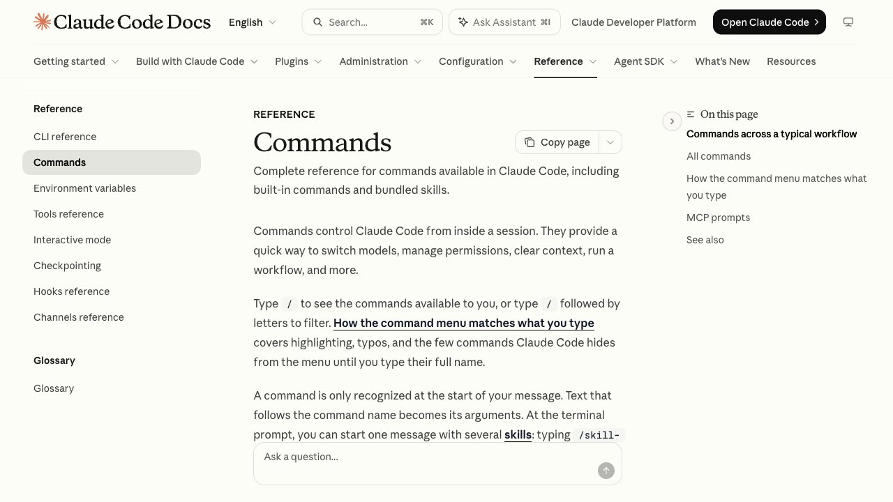

Cómo se usan
Los comandos con barra (/usage, /logout…) se escriben dentro de Claude Code, en la caja donde hablas con él, y se ejecutan al pulsar Enter. Los que no llevan barra (claude, claude --version…) se escriben en la terminal normal, antes de entrar. Si escribes solo /, Claude Code te enseña la lista de lo que tienes disponible en tu versión.
Cada comando de abajo tiene un botón para copiarlo. La lista completa cambia con las versiones; esta es la parte que de verdad usarás, comprobada con la documentación oficial a 23 de octubre de 2026.
Entrar, salir y cambiar de cuenta
/loginInicia sesión con tu cuenta de Anthropic./logoutCierra la sesión de tu cuenta de Anthropic./exitSale de Claude Code (también vale /quit)./resumeVuelve a una conversación anterior./clearEmpieza una tarea nueva sin la conversación anterior, manteniendo la memoria del proyecto.Para cambiar de cuenta: escribe /logout para cerrar la sesión actual y luego /login para entrar con la otra. Para salir sin cerrar sesión, usa /exit: la próxima vez que abras claude seguirás dentro.
Gasto, límite y contexto
/usageMuestra el coste de la sesión, los límites de tu plan y estadísticas de uso (también vale /cost)./contextEnseña qué está llenando la ventana de contexto./compactResume la conversación para liberar espacio sin empezar de cero./modelCambia el modelo que usas./effortAjusta cuánto razona el modelo.Si el límite te preocupa, lee límite de uso de Claude Code: explica la ventana de 5 horas, el tope semanal y los seis trucos para gastar menos.
Tu proyecto: memoria, permisos y modo plan
/initGenera un archivo CLAUDE.md inicial para tu proyecto./memoryTe deja revisar y afinar esa memoria./permissionsDefine tus reglas de aprobación: qué puede hacer sin preguntarte./mcpConfigura los servidores MCP que necesite tu proyecto./planPasa al modo plan antes de un cambio grande.Cuando algo falla
/doctorRevisa tu instalación y tu configuración, diagnostica problemas y puede arreglarlos./statusComprueba a qué estás conectado y con qué configuración./helpAbre la ayuda y la lista de comandos./feedbackInforma de un fallo con el contexto de tu sesión./upgradeAbre en el navegador la página para cambiar a un plan superior.Comandos de la terminal
claudeAbre Claude Code en la carpeta donde estés.claude --versionMuestra la versión instalada. Si da error, no está bien instalado.claude doctorComprueba cómo está instalado Claude Code.claude -p "tu pregunta"Responde una vez y termina, sin abrir la sesión interactiva.¿Aún no lo tienes? Mira cómo instalar Claude Code. Y si estás empezando, qué es Claude Code y cómo usarlo sin saber programar.
Preguntas frecuentes
¿Cómo cierro sesión en Claude Code?
Escribe /logout dentro de Claude Code. Cierra la sesión de tu cuenta de Anthropic; para volver a entrar, escribe /login.
¿Cómo salgo de Claude Code?
Escribe /exit (también vale /quit). Sales del programa, pero tu sesión de cuenta sigue iniciada.
¿Cómo cambio de cuenta?
Cierra la sesión con /logout y entra con la otra cuenta usando /login.
¿Cómo veo cuánto límite me queda?
Escribe /usage. Muestra el coste de la sesión, los límites de tu plan y estadísticas de uso.
¿Qué diferencia hay entre /clear y /compact?
/clear empieza una conversación nueva sin el historial (conserva la memoria del proyecto). /compact resume la conversación actual para liberar espacio y seguir con ella.